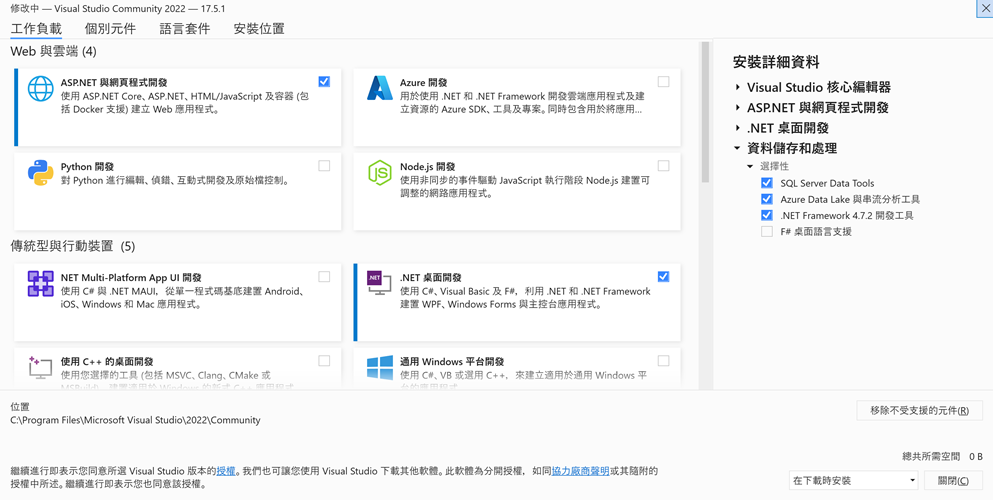
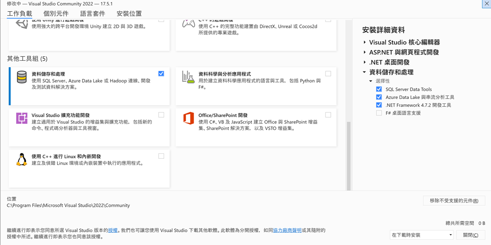

準備工作
安裝軟體包含.Net SDK及Visual Studio。
下載.Net SDK
請連結至.Net官網 (https://dotnet.microsoft.com/en-us/download) 下載最新版.NET SDK x64版本，如果是Apple Mac，請點選 All .Net downloads 後，選擇macOS installer，請注意：Mac CPU為M版本請下載 macOS Arm64版本，Intel CPU請下載 macOS x64版本。下載後請執行安裝。
下載Visual Studio
請下載Visual Studio 2022或Visual Studio 2022 Community(https://visualstudio.microsoft.com/zh-hant/vs/community/) installer後，請安裝如下圖工作負載(如下圖)。安裝Visual Studio 2022或Visual Studio 2022 Community後請使用微軟帳號進行免費啟用。


建立並執行Visual Studio C#MVC專案
- 開啟Visual Studio
- 選擇建立新的專案
- 專案範本搜尋 輸入 mvc 後選擇 ASP.NET CORE Web應用程式(Model-View-Controller)，選擇下一步，取消 HTTPS進行設定後，岸建立
- 點選選項按鈕 綠色三角形專案名稱 執行專案